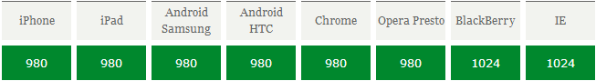
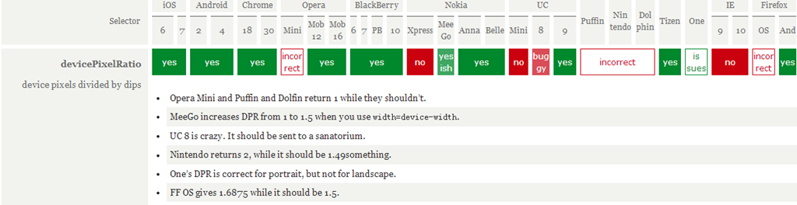

简单来说meta name="viewport" content="width=device-width,initial-scale=1.0" 解释
content属性值 :
width:可视区域的宽度，值可为数字或关键词device-width
height:同width
intial-scale:页面首次被显示是可视区域的缩放级别，取值1.0则页面按实际尺寸显示，无任何缩放
maximum-scale=1.0, minimum-scale=1.0;可视区域的缩放级别，
maximum-scale用户可将页面放大的程序，1.0将禁止用户放大到实际尺寸之上。
user-scalable:是否可对页面进行缩放，no 禁止缩放
复杂的说：
移动前端开发之viewport的深入理解
在移动设备上进行网页的重构或开发，首先得搞明白的就是移动设备上的viewport了，
只有明白了viewport的概念以及弄清楚了跟viewport有关的meta标签的使用，才能更好地
让我们的网页适配或响应各种不同分辨率的移动设备。
通俗的讲，移动设备上的viewport就是设备的屏幕上能用来显示我们的网页的那一块区域，在具体一点，就是浏览器上 (也可能是一个app中的webview)用来显示网页的那部分区域，但viewport又不局限于浏览器可视区域的大小，它可能 比浏览器的可视区域要大，也可能比浏览器的可视区域要小。在默认情况下，一般来讲，移动设备上的viewport都是要 大于浏览器可视区域的，这是因为考虑到移动设备的分辨率相对于桌面电脑来说都比较小，所以为了能在移动设备上正 常显示那些传统的为桌面浏览器设计的网站，移动设备上的浏览器都会把自己默认的viewport设为980px或1024px （也可能是其它值，这个是由设备自己决定的），但带来的后果就是浏览器会出现横向滚动条，因为浏览器可视区域的 宽度是比这个默认的viewport的宽度要小的。下图列出了一些设备上浏览器的默认viewport的宽度。
在css中我们一般使用px作为单位，在桌面浏览器中css的1个像素往往都是对应着电脑屏幕的1个物理像素，这可能会 造成我们的一个错觉，那就是css中的像素就是设备的物理像素。但实际情况却并非如此，css中的像素只是一个抽象 的单位，在不同的设备或不同的环境中，css中的1px所代表的设备物理像素是不同的。在为桌面浏览器设计的网页中， 我们无需对这个津津计较，但在移动设备上，必须弄明白这点。在早先的移动设备中，屏幕像素密度都比较低， 如iphone3，它的分辨率为320x480，在iphone3上，一个css像素确实是等于一个屏幕物理像素的。后来随着技术的 发展，移动设备的屏幕像素密度越来越高，从iphone4开始，苹果公司便推出了所谓的Retina屏，分辨率提高了一倍， 变成640x960，但屏幕尺寸却没变化，这就意味着同样大小的屏幕上，像素却多了一倍，这时，一个css像素是等于两 个物理像素的。其他品牌的移动设备也是这个道理。例如安卓设备根据屏幕像素密度可分为ldpi、mdpi、hdpi、xhdpi 等不同的等级，分辨率也是五花八门，安卓设备上的一个css像素相当于多少个屏幕物理像素，也因设备的不同而不同， 没有一个定论。
还有一个因素也会引起css中px的变化，那就是用户缩放。例如，当用户把页面放大一倍，那么css中1px所代表的 物理像素也会增加一倍；反之把页面缩小一倍，css中1px所代表的物理像素也会减少一倍。关于这点，在文章后 面的部分还会讲到。
在移动端浏览器中以及某些桌面浏览器中，window对象有一个devicePixelRatio属性，它的官方的定义为：设备物理像 素和设备独立像素的比例，也就是 devicePixelRatio = 物理像素 / 独立像素。css中的px就可以看做是设备的独立 像素，所以通过devicePixelRatio，我们可以知道该设备上一个css像素代表多少个物理像素。例如，在Retina屏的 iphone上，devicePixelRatio的值为2，也就是说1个css像素相当于2个物理像素。但是要注意的是， devicePixelRatio在不同的浏览器中还存在些许的兼容性问题，所以我们现在还并不能完全信赖这个东西，具体的情况 可以看下 这篇文章。
devicePixelRatio的测试结果：
